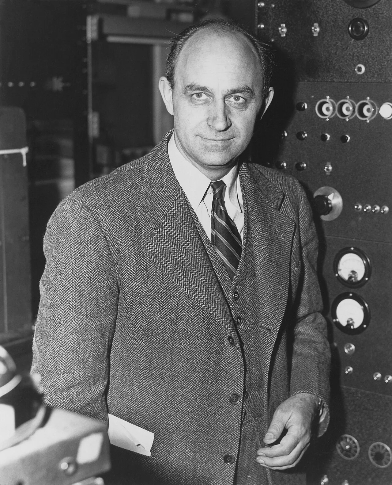
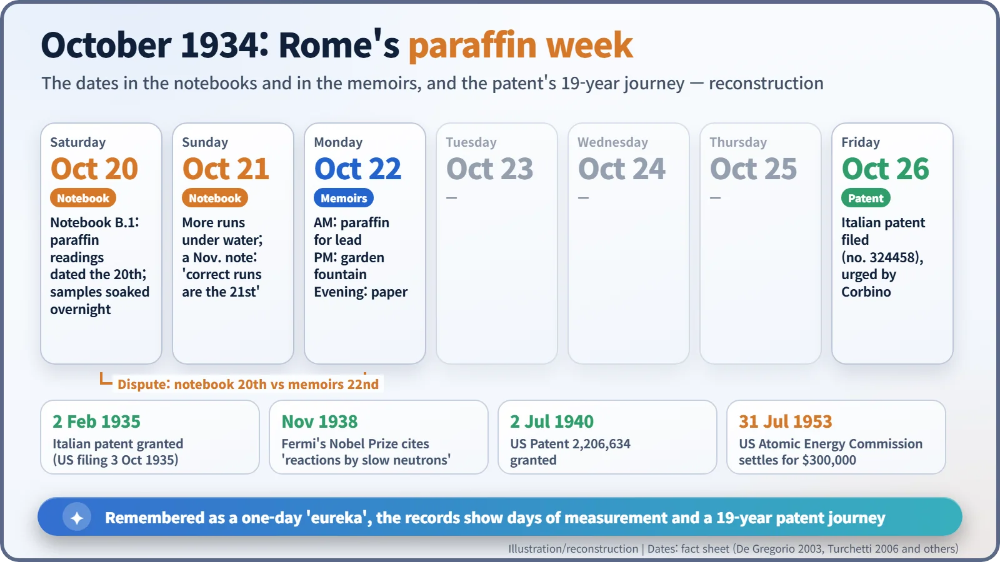
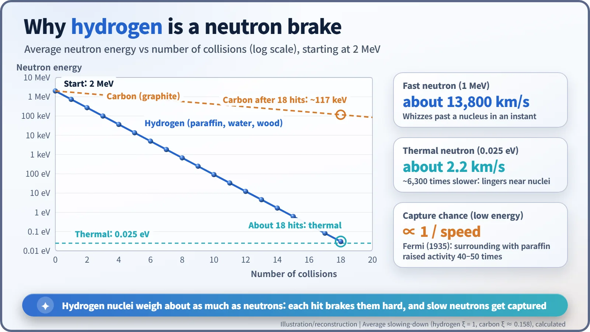

Nuclear History · 054
Better on Wood than on Marble? — Fermi Discovers the Slow-Neutron Effect (1934)
Silver turned more radioactive on wood than on marble, and a last-minute swap of lead for paraffin revealed the principle behind every reactor moderator.
In October 1934, Enrico Fermi's team in Rome noticed that silver became more radioactive on a wooden table than on a marble one. When Fermi put paraffin wax between the neutron source and the silver, the activity jumped: hydrogen slows neutrons down, and slow neutrons are captured far more easily. That discovery became the principle of the reactor moderator, and its patent took nineteen years to pay off.
"No! I do not want this piece of lead here; what I want is a piece of paraffin."
That is how Enrico Fermi (1901–1954) remembered the moment, telling the astrophysicist Subrahmanyan Chandrasekhar about it roughly two years before his death. He had gone to unusual trouble to have a piece of lead precisely machined, kept finding excuses not to put it in place, and at the last second reached for "some odd piece of paraffin" instead. By his own account there was no conscious reasoning behind it. Yet that whim marks the starting point of the principle at the heart of almost every nuclear reactor: slowing neutrons down. [6]

The table that changed the numbers
Rome, 1934. At the Physics Institute of the University of Rome on Via Panisperna, Fermi and a group of young colleagues were firing neutrons at element after element to make them artificially radioactive. To make their measurements more precise, they used one particular activity as a yardstick: a radioactivity with a half-life of about two minutes that neutrons induced in silver. [2]
But the yardstick misbehaved. The same neutron source and the same piece of silver gave different results depending on where the irradiation was done. Edoardo Amaldi (1908–1989) and the newly arrived Bruno Pontecorvo (1913–1993) noticed that silver irradiated on a wooden table became far more active than silver irradiated on a marble one. Who spotted it first, and exactly when, differs from one memoir to the next. [2] [8]
If the surroundings mattered, the team had to find out how. The plan was to slip a wedge of lead between the neutron source and the silver. That was the moment Fermi swapped the lead for paraffin wax.
Paraffin, a fountain and one long day
The effect was immediate: neutrons that had passed through paraffin made the silver much more radioactive. In a lecture the following year, Fermi said that hydrogen-containing substances raised the intensity of induced radioactivity by a factor of 10 or 100, and that surrounding the set-up with paraffin multiplied the effect 40 or 50 times. [6]
According to his colleagues' recollections, that same afternoon the group repeated the experiment in the pool of the fountain in the institute's garden. Water worked just like paraffin. A story often told says goldfish lived in that pool, but it is an anecdote that has not been confirmed.
That evening everyone gathered at Amaldi's home and wrote a short letter for the journal La Ricerca Scientifica: "Action of hydrogenated substances on the radioactivity induced by neutrons" (our translation of the Italian title). [1]
There is a twist in the date. Fermi's wife Laura and his colleagues all remembered it as Monday, 22 October 1934. But in 2003 a historian who examined the group's laboratory notebooks, kept in Pisa, found the paraffin measurements written on a page headed 20 October, along with records of samples left soaking in water overnight on the 20th and 21st. Memory preserved a single "eureka" day; the paperwork shows several days of measurements. [2]

Why hydrogen?
Within a day, Fermi had the explanation. Paraffin, water and wood are full of hydrogen. A hydrogen nucleus (a proton) weighs almost exactly as much as a neutron, so every collision robs the neutron of a big share of its energy, much as a billiard ball stops dead when it hits another ball of the same weight head-on. Bounce a neutron off a heavy nucleus instead and it is like a ping-pong ball hitting a bowling ball: it rebounds with nearly all its speed. Marble is calcium carbonate, with almost no hydrogen. That is why the wooden table won. [7]
The numbers make the point. A fast neutron with an energy of 1 MeV travels at about 13,800 km per second. After about 18 collisions with hydrogen, on average, it is down to the energy of the surrounding atoms, about 0.025 eV, and moving at only about 2.2 km per second: more than 6,000 times slower. A slow neutron lingers near a nucleus for longer and is more likely to be captured. At low energies, the capture probability of many nuclei rises in inverse proportion to the neutron's speed. Think of a car racing down a motorway versus someone strolling down a shopping street: the stroller is far more likely to wander into a shop.

A patent and a cheque, nineteen years later
The institute's director, Orso Mario Corbino, saw the practical value at once and urged a patent. An Italian application (no. 324458) was filed on 26 October 1934. In the United States the process was granted as Patent 2,206,634, "Process for the production of radioactive substances", on 2 July 1940. [3] [5]
During the Second World War, American reactors and the atomic bomb project relied on exactly this principle. The inventors filed a claim for compensation in 1948, but negotiations dragged on. Their business agent filed a headline-grabbing $10 million suit, and when co-inventor Pontecorvo vanished to the Soviet Union in 1950, the inventors' bargaining position weakened further. Finally, on 31 July 1953, the US Atomic Energy Commission announced a payment of $300,000. Time magazine headlined the story "For Slow Neutrons, Slow Pay". [3] [4]
Fermi had received the 1938 Nobel Prize in Physics, and the citation included "his related discovery of nuclear reactions brought about by slow neutrons". Today light-water reactors slow neutrons with ordinary water, heavy-water reactors with heavy water, and graphite reactors with carbon. The ancestor of every moderator was a wooden table and a lump of paraffin in 1934 Rome. It looks like luck, but what turned the luck into a discovery was a team that refused to ignore a difference between two tables. [7]